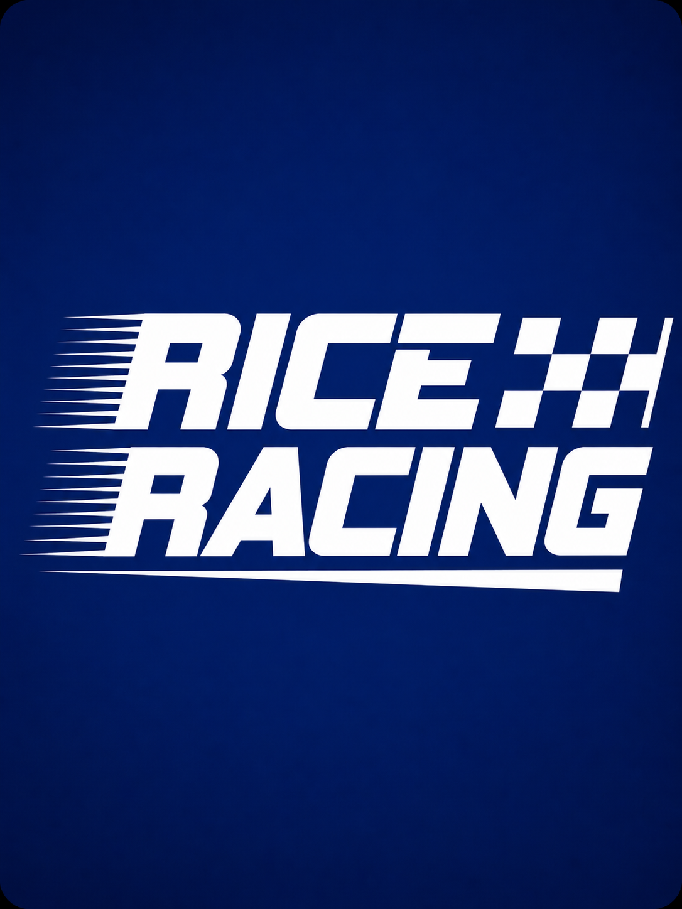

Rice Racing / Formula SAE
Built as a team.
As Powertrain Subteam Lead for Rice Racing, I work on the systems that help our Formula SAE car perform reliably.

My role
Powertrain Subteam Lead · Rice University
My work includes cooling and fuel system design, with attention to vehicle packaging, thermal management, and serviceability.
Engineering focus
Understanding subsystem requirements, evaluating layouts, and coordinating with adjacent vehicle systems to fit the constraints of a compact race car.
Current design work
I’m developing the fuel and cooling systems around a gasoline Honda CBR600RR engine. This includes fuel-system component selection and routing, radiator and fan sizing, and sidepod packaging.
The work is in the design and evaluation stage, with hardware testing still ahead.